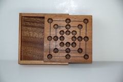
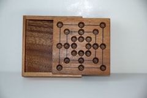

|
 |

|

|
History
Nine Men's Morris is believed to be one of the oldest games in history. It is an alignment and configuration game that is found widely around the world. Morris does not have to do with Morris dancers, instead it comes from the Latin word merellus, meaning the corruption of counters. The earliest known diagram of this game was found in an Egyptian temple in Kurna Egypt, dating around 1440 BC. Other boards have been discovered in Ceylon of Sri Lanka (c. AD 10) and in the Gokstad Viking ship (c. AD 900). In Ceylon two boards are cut on the steps leading to the hill at Mihimtali and others are found on a rock near Lankarama dagaba. Evidence of the board scratched in the ground has also been found in the Bronze-Age Ireland, ancient Troy, and the Southwestern United States. In the US, Kere, Tigua, Tew and Zuni Indians played a version of the game called paritariya, picarva, and pedreria. To the ancient Celts, the Morris square was sacred. The central square known as the Cauldron or Mill was a symbol of regeneration while the lines and squares coming out from the middle were symbols of "the four cardinal directions, the four elements and the four winds"(Mohr 30).
Although it is not known when Nine Men's Morris reached Britain, it was widely played during the Middle Ages, along with similar games such as Three, Six, and Twelve Men's Morris. The game was most popular in the 14th and 15th Century. During the fourteenth century, Nine Men's Morris boards were a part of a set of games that were played on "shallow boxes with hinged lids" (Bell 8). When the box was closed, one surface had a chessboard while the other had a Nine Men's Morris board. When opened, the box was used as a backgammon board. The game was also frequently played with pebbles on engraved boards in taverns or on boards drawn in the ground with a trowel. The board was found scratched onto the seats of many British cathedrals, and on the "steps of Furness Abbey, tombstones at Dryburgh Abbey, Worksop, and Arbory in the Isle of Man, at Norwich, Dover, Helmsley, and Scarborough Castles, and on stones built into the walls of churches, as at Hargrace (Northants), Ickford (Bucks.), Sparsholt (Berks.), and Kirkby Underdale (Yorks.)" (Murray 44). By the late 16th century, the game was called Merels from an Old English word "mere" meaning boundaries.
Shakespeare refers to Nine Men's Morris in A Midsummer Night's Dream, when he wrote "The Nine Men's Morris is fill'd up with mud" (Act 2, Scene 2). In the passage, Titania, the queen of the fairies blames Oberon for causing chaos in the world. The rain has not stopped causing disease and the Nine Men's Morris Board to be unplayable. This passage is often cited as evidence that the game was played outdoors. The game is also mentioned in the medieval literature of France and Germany. In Civis Bononiae MS, the popularity of the game among commoners is described as "Tunc merellos doceo quibus plebs iocatur" (Murray 45). The game has also been played with real life pieces. On June 24, 1897, boys and girls were used as pieces at Saffron Walden. During World War I, new versions of the game sprung up. Known as Trencho, these versions of Nine Men's Morris were inspired by trench fighting.
Game Play
The Pieces:
There are 9 pieces or men of one color for one player and 9 markers of a different color for the other player.
Any two types of pieces will work as long as there are 9 for each player. Traditionally the two colors used are black and white.
Rules:
To move: The moves are split into three phases.
When beginning the game, players alternate placing one of their pieces on any empty node on the board.
Once all 18 pieces have been played, players alternate taking turns sliding a piece from its node to any other empty node connected to it by a line.
If a player's move (during either phase) completes a "mill", which is a line of 3 of that player's piece, then that player gets to remove any opponent's piece
from the board that is currently not in a mill. A mill may be broken and reformed several times and the player may remove a piece each time it is formed.
"Fly" rule (third phase): When a player is down to 3 pieces, that player may move his or her piece to any empty node on the board.
To win: A player wins when he or she reduces the number of the opponent's pieces to 2 or puts the opponent into a position where he or she cannot make any legal moves.
The board starts out empty. Players alternate placing all 18 men on the board. The object of the game is to form a mill of three men along any of the 16 lines. If a player creates a mill, they remove one of their opponent's pieces from the board. The player may not take a man from an opponent's mill, unless there are no other options on the board. Once all pieces have been placed, players alternate sliding pieces to adjacent, empty nodes. Players may move their piece in any direction and are not allowed to leap over their opponent's pieces. During either of these phases, whenever they form mills, they remove one of their opponent's pieces. If the player is unable to move, their opponent continues until there is a move available. When a player only has 3 men left, he or she may fly. During this phase, the player may move to any position on the board. Capturing is still enforced in this phase. When a player reduces the opponent's men to 2 or the opponent cannot make a legal move on his or her turn, the player wins.
Strategies:
Early in the game it is essential to place your piece in strategic locations where you can easily move your piece. Do not concentrate on trying to form mills.
For example, pieces on the midpoints of the inner most square can move in three direction while pieces placed on the corner may only move in two directions.
A player should avoid crowding all their pieces in one square.
A player may move a piece out of a mill, and then slide it back into place on the next move. Try to block your opponent from doing this. If you are unable to block your opponent,
then try to make a mill of your own with the same strategy of your opponent. The other player will be forced to choose between blocking your piece and continuing his strategy.
Double Mill/Seesaw/Running Jenny: It is desirable to form 2 mills side by side so that a player can slide a piece from one mill to the other, removing a piece of his or her opponent every turn.
Variants:
Misere: Force opponent to create mills so they eventually reduce your number of pieces to 2.
Diagonals: 4 diagonals can be added to connect the corresponding corners of the squares. Mills can be formed along these diagonals as well. The increase in movement allows for more tactics and generally speeds up the game as well.
No "Fly" Rule: A game can be played without the fly rule.
"Board Size" variants: There is a game called Three Men's Morris which is closely related to Nine Men's Morris but its rules are different enough that it is usually considered a separate game in itself. Therefore, it will not be described here, but the following games have rules similar enough to be considered variants.
Three Men's Morris (Nine Holes): The board is similar to a tic-tac-toe board. Boards have been found at Komombo in a Ptolemaic temple and has been mentioned
by Ovid in Ars Amatoria. In China, the game was known as Yih around 500 B.C. Each player has three men or pieces. Players take turns placing their pieces
on any open point. When all pieces have been placed, players take turns sliding their pieces to an open adjacent spot. The first player to get three of their pieces in a row, either
vertically, horizontally or diagonally wins.
Six Men's Morris: The game became popular in Italy, France and England in the Middle Ages. The rules are similar to Nine Men's Morris except for two aspects.
The players only have six men each and the board is made up of only 2 squares.
Twelve Men's Morris: The board is the same as Nine Men's Morris except this variant requires the use of the diagonals rule mentioned above.
In addition to that difference, players also have twelve men each. Because there are only 24 positions on the board,
it is possible for the game to end during the first phase in a draw (if all the pieces are placed and no one has formed a mill during that time).
Eleven Men's Morris: This game is the same as twelve men's morris except each player only has eleven men. This also means the game cannot end in a draw in the first phase.
Alternate Names
Mühle - Mill(Germany)
Jeu de Moulin - Game of Mill (France)
Mühle(n)spiel - Germany
Molenspel - Holland
Merelles - France
Smerelli - Italy
Qvarn, dubbel-qvarn - Sweden
Mylna - Iceland
Melnitsa or Melnichny - Russia
Malomajatek - Hungary
Triodi - Macedonia and southern Greece
Sujjua - India
Nerenchi keliya - Ceylon
Sam k'i - China
Kontjil - Korea
Shah - Somaliland
Akidada - Gold Coast and Nigeria
Picaria - New Mexico
Trique - Bogas, Amazon River
Paritariya, picarva, and pedreria - Southwestern US Indians
Pictures:
|
|
 |
|
|
GamesCrafters:
C: Erwin A. Vedar, Wei Tu, Elmer Lee
References:
Bell, R. C. Board and Table Games from Many Civilizations. New York:
Dover, 1979. 91-95.
Mohr, Merily Simonds. The Games Treasury. Shelburne: Chapters Publishing Ltd., 1993. 30-31.
Murray, H.J.R. Oxford: Oxford University Press, 1951. 35-48.
Provenzo, Asterie Baker, and Eugene F. Provenzo, Jr. Favorite Board Games You Can Make and Play. New York: Dover Publications, 1981. 30-36.
Pritchard, David. Brain Games. New York: Penguin Books, 1982. 128-131.